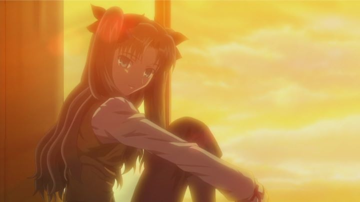

Disclaimer: This review covers the feature film "Fate/Stay Night: Unlimited Blade Works" (2010) by Studio Deen, unrelated to the television series (2014) of the same name. "Fate/Stay Night" is a popular visual novel with a surprisingly vast anime history. As of 2019, there are four distinct animated adaptations of that story, plus additional spin-offs and sequels. Studio Deen animated the original series in 2006, but at the time, it wasn't particularly great. But before studio Ufotable took over the reigns with "Fate/Zero" (2011), as well as their own adaptation, Studio Deen took one last shot at animating the story. This would be a feature length film called "Unlimited Blade Works," adapting a specific "route" of the game with the same name. To date, for both price, availability and runtime, it's the easiest entry point to the franchise, and was the first exposure I had. Sentai Filmwork's American DVD release also comes in a nice ruby-red box as a bonus.In terms of story, the movie rushes through the opening premise, but does just enough to explain things for newcomers: in this way, it's actually much better than Ufotable's later adaptations, which make little to no attempt to explain things for anyone who hasn't already seen or played the other forms of the story. Shirou Emiya is a young man who finds himself in the middle of the Holy Grail War, a secret battle between mages for a cup that grants any one wish. The mages summon heroes of history and legend to fight in their place. Shirou becomes a participant, summoning none other than King Arthur (a female version). He fights to survive, but also to learn what it really means to be a hero. The original anime took elements from multiple "story threads," but this movie focuses mainly on just one. It's a good one to adapt, as it provides the most closure between both Shirou's aim to become a hero, and the mysterious persona of Archer, the hero of Rin Tosaka, Shirou's ally. That focus helps tremendously, and the slightly darker tone is also a bonus (although it doesn't get nearly as dark as the novel does). If a new viewer can get past the first 15 minutes or so of quick story introduction, they'll be able to understand the appeal of the franchise through this and its conclusion. If the viewer has already seen Studio Deen's original anime, they'll appreciate the shorter runtime and added story content not in the original series. If you happened to have already seen the prequel "Fate/Zero," "Unlimited Blade Works" makes for a great sequel film without further explaination. ... that's not to say the story is "great." "Fate/Stay Night" has always had some stupid writing, no matter how interesting the basic premise may be, mostly hindered by the original source material. But it's not horrible by anime standards, and this does remain one of the better versions of "Stay Night" you'll find.Another highlight is the theatrical-level production values. The animation in the original series wasn't spectacular, but Studio Deen really went the extra mile for the movie. Sunsets are colorful, explosions are well rendered, and action scenes (as brief as they are) are bold, fast and dynamic. Most of the more basic scenes look more in line with the show, but still a slight notch above. None of this holds a candle to Ufotable's rendering in their adaptations that follow, but the fighting scenes do come close to that new standard, and that's no small feat. If you came to this right after watching the original series, you'll be impressed. And even if coming from the later works, you won't be horrified by the fall in quality.Along with the visuals is the musical score, moody and reminiscant of the show's soundtrack, but a bit better. It's a great background for a fantasy story. The English dub isn't great, but admittedly, the cool personalities come across well with a confident English voice behind it, no matter how corny some of the dialogue is. Hearing this in English is part of the fun. No one adaptation of "Fate/Stay Night" is complete enough to cancel out the others. But despite not matching the high quality of Ufotable's later works, this is arguably the best presentation of the story, good enough to watch without and in place of Studio Deen's original series. If someone has at least watched "Fate/Zero," or even if someone has only read the Wikipedia synopsis for the visual novel, this is the entry point I would recommend.
- "Ani" More reviews can be found at : https://2danicritic.github.io/ Previous review: review_Fate_-_Stay_Night Next review: review_Fate_-_Stay_Night_-_Unlimited_Blade_Works_(TV)